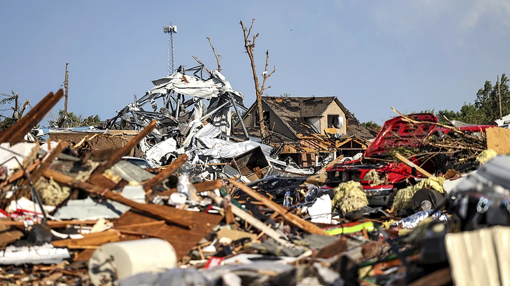

Damages Caused by Tornadoes
What kinds of destruction can be caused by tornadoes and how do we fix it?

The damages and destruction caused by tornadoes can vary depending on the severity of the tornado. On one end, the damages can be very minimal, and on the other tornadoes can uproot trees, throw cars and completly destroy well-made buildings.
In addition to all this destruction, tornadoes account for around one hundred deaths each year in the US. The extent of the damages caused by tornadoes anually costs hundreds of millions to a few billion dollars in the US.